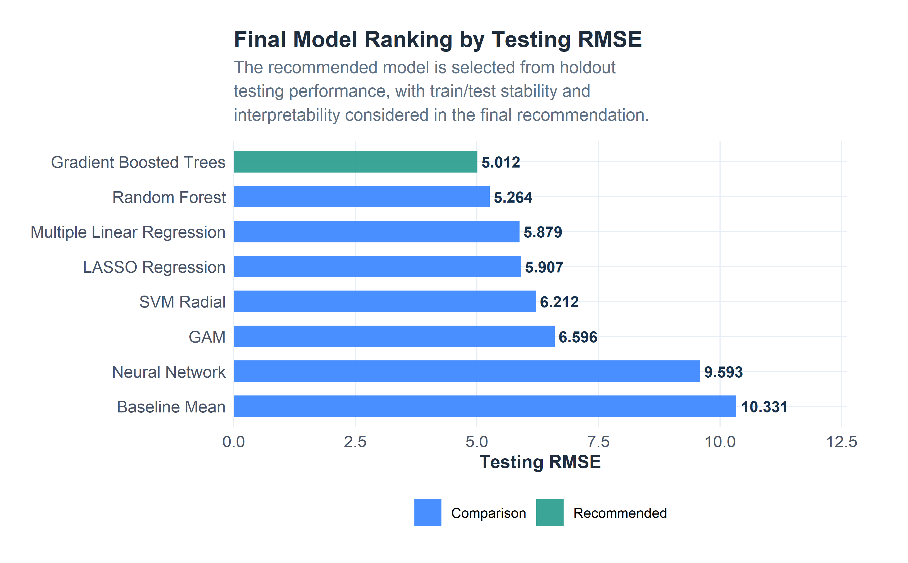
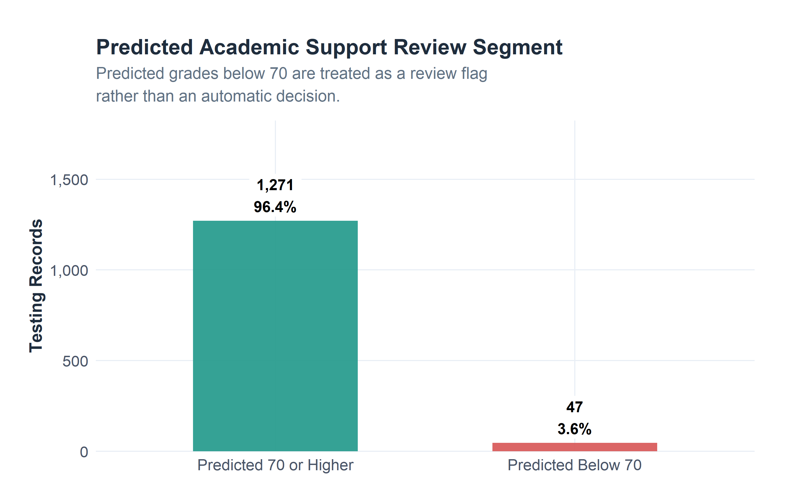
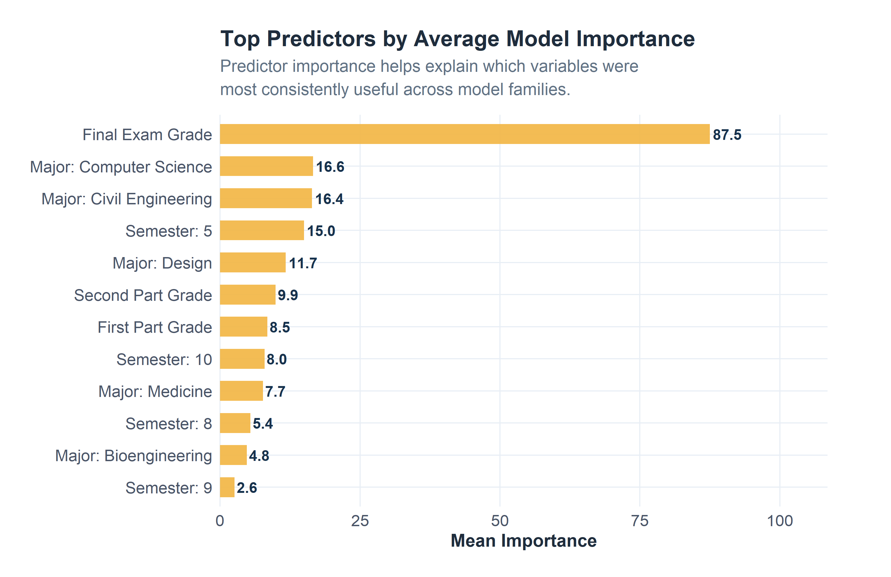

Insights & Recommendations
This page translates the modeling results into final findings, implementation considerations, limitations, and student-support recommendations. The focus is practical: how the analysis could help an institution identify academic risk earlier and respond before students fall further behind.
Page Overview
1. Executive Summary
Use Gradient Boosted Trees as the recommended model from this workflow.
This model produced the strongest testing-set performance in the saved results workflow. The model should be used as a decision-support tool for identifying students who may need review, not as an automated decision system.
The project started as an academic retention modeling exercise, but the workflow also mirrors a real institutional research problem. A university does not only need to know which students eventually stop out. It also needs earlier signals that a student may be struggling while there is still time to respond.
In this project, FinalGrade was used as the primary modeling outcome. EnrollmentStatus was retained as a predictor and context variable rather than treated as the outcome. That structure supports a practical early-support frame: predict academic performance, identify risk patterns, and connect those patterns to possible intervention points.
| Area | Final_Takeaway |
|---|---|
| Primary outcome | FinalGrade was used as the numeric modeling target. |
| Best-performing model | Gradient Boosted Trees |
| Primary evaluation metric | Testing RMSE, supported by R-squared and MAE. |
| Main practical use | Identify students who may benefit from academic support review. |
| Strongest signal group | Grade-related predictors were the most direct performance signals. |
| Decision caution | Predictions should support human review, not replace advising judgment. |
2. What the Model Results Suggest
The results support a straightforward conclusion: academic performance data contains strong signal for predicting final course outcomes. That is expected because earlier grade components are directly tied to final grade performance. However, the broader value of the project is not only the prediction itself. The value is in combining performance signals with attendance, financial, engagement, and support-service context so that the institution can decide what kind of help may be appropriate.
| Finding | What_It_Means | Practical_Use |
|---|---|---|
| Earlier academic performance was highly relevant. | Grade components provide a direct signal of final course performance. | Use early grade movement to prioritize academic check-ins. |
| Attendance remains important. | Absence patterns give a behavioral signal that can be reviewed before final outcomes are known. | Trigger attendance follow-up when absence patterns begin to increase. |
| Financial indicators add context. | Scholarship percentage and past-due balance may help explain pressure around persistence and performance. | Route students to financial-support review when needed. |
| Support-service variables need careful interpretation. | High support usage may indicate both help-seeking behavior and underlying academic need. | Use support usage as context rather than assuming it causes outcomes. |
| Model performance must be paired with human review. | The model can rank risk, but it cannot understand each student’s full situation. | Use predictions to support advising conversations, not to make automatic decisions. |
3. Model Performance in Context
The recommended model improved on the baseline mean model by approximately 51.5% in testing RMSE. That improvement matters because the baseline does not use student-level predictors. Any useful predictive model should perform better than simply assigning every student the average final grade.
| Rank | Model | Recommendation_Role | Testing_RMSE | Testing_Rsquared | Testing_MAE | RMSE_Gap |
|---|---|---|---|---|---|---|
| 1 | Gradient Boosted Trees | Recommended final model | 5.012 | 0.765 | 2.826 | 0.652 |
| 2 | Random Forest | Secondary comparison | 5.264 | 0.740 | 2.886 | 2.695 |
| 3 | Multiple Linear Regression | Secondary comparison | 5.879 | 0.676 | 2.815 | 1.064 |
| 4 | LASSO Regression | Secondary comparison | 5.907 | 0.673 | 3.051 | 0.926 |
| 5 | SVM Radial | Secondary comparison | 6.212 | 0.638 | 3.386 | 0.391 |
| 6 | GAM | Secondary comparison | 6.596 | 0.592 | 2.616 | 2.356 |
| 7 | Neural Network | Secondary comparison | 9.593 | 0.138 | 4.151 | 3.758 |
| 8 | Baseline Mean | Reference only | 10.331 | 0.000 | 7.055 | 0.220 |

4. Risk Review from Predicted Grades
Predicted final grades can be translated into a support-review segment. This should not be interpreted as a final label on the student. It is simply a way to prioritize outreach when resources are limited.

| Predicted_Risk_Group | Records | Percent |
|---|---|---|
| Predicted 70 or Higher | 1271 | 96.4% |
| Predicted Below 70 | 47 | 3.6% |
Decision Use: The predicted-risk segment should prompt review, not punishment. A student flagged by the model should receive support-oriented outreach, not an automatic negative action.
5. Most Useful Predictors
The model results suggest that the strongest predictors are concentrated around academic progress, especially grade-related signals. This is not surprising. Earlier performance is often the most direct indicator of final performance. The more useful operational insight is that other variables help explain what kind of support may be needed.
Top predictors from the model comparison included: Final Exam Grade, Major: Medicine, Major: Computer Science, Major: Civil Engineering, Semester: 10.
| Aggregate_Rank | Variable | Models_Available | Mean_Rank | Mean_Importance | Best_Rank |
|---|---|---|---|---|---|
| 1 | Final Exam Grade | 5 | 2.8 | 87.514 | 1 |
| 2 | Major: Medicine | 5 | 8.6 | 7.688 | 2 |
| 3 | Major: Computer Science | 5 | 8.8 | 16.615 | 3 |
| 4 | Major: Civil Engineering | 5 | 9.8 | 16.427 | 4 |
| 5 | Semester: 10 | 5 | 12.4 | 7.958 | 6 |
| 6 | Major: Design | 5 | 16.0 | 11.733 | 6 |
| 7 | Semester: 5 | 5 | 16.2 | 15.000 | 5 |
| 8 | First Part Grade | 5 | 16.4 | 8.474 | 3 |
| 9 | Semester: 8 | 5 | 17.6 | 5.432 | 10 |
| 10 | Second Part Grade | 5 | 17.8 | 9.939 | 2 |
| 11 | Semester: 9 | 5 | 18.4 | 2.609 | 11 |
| 12 | Major: Bioengineering | 5 | 21.0 | 4.801 | 14 |

6. Recommended Student-Support Actions
The model does not directly prescribe an intervention. It identifies patterns that can help an advising or student-success team prioritize review. The strongest use case is to connect predicted academic risk with the type of support a student may need.
| Signal | What_To_Review | Recommended_Action |
|---|---|---|
| Low predicted final grade | Academic performance pattern and course history | Prioritize advising outreach and academic-success review. |
| Weak early grade components | First and second grading-period performance | Offer tutoring, instructor check-in, or course-specific academic support. |
| Increasing absences | Attendance pattern across grading periods | Trigger attendance follow-up before the student falls further behind. |
| Past-due balance or low financial support | Account balance and aid context | Route to financial-aid or student accounts review. |
| High support-service usage | Advising, tutoring, counseling, and formative plan activity | Review whether current support is sufficient or needs adjustment. |
| Low engagement/course-experience indicators | Teacher evaluation and course experience signals | Review course-level friction, communication, and student experience. |
7. Intervention Priority Framework
A practical use of the model is not to label students as “good” or “bad.” A better use is to create a review queue. The table below translates model output into a support-priority framework.
| Priority_Level | Suggested_Criteria | Response |
|---|---|---|
| High Priority | Predicted FinalGrade below 70 or large negative performance trend | Advisor review within the current term; tutoring and support-service referral as needed. |
| Moderate Priority | Predicted FinalGrade near the risk threshold or worsening attendance | Monitor progress and contact student if grades or attendance continue to decline. |
| Context Review | Financial pressure, high support-service usage, or unusual data pattern | Review account, advising, and support history before deciding next action. |
| Low Priority | Predicted FinalGrade comfortably above threshold with stable attendance | No immediate intervention; continue standard academic monitoring. |
Academic Support
Use early grade signals to prioritize tutoring, instructor follow-up, and advising conversations.
Attendance Follow-Up
Use absence patterns as an early behavioral signal that a student may need outreach.
Financial Review
Use financial indicators as context for support, not as a stand-alone risk judgment.
8. Ethical and Practical Considerations
A student-retention model has to be handled carefully. The outcome is academic performance, but the consequences of poor implementation can affect real students. For that reason, the model should support human decision-making rather than replace it.
| Concern | Why_It_Matters | Recommended_Control |
|---|---|---|
| False positives | A student may be flagged even though they are not truly at risk. | Use supportive outreach language and allow advisor review. |
| False negatives | A struggling student may not be flagged by the model. | Do not rely only on model output; keep existing advising channels active. |
| Sensitive context variables | Demographic or background variables can introduce fairness concerns. | Audit performance by subgroup before operational use. |
| Financial indicators | Financial variables may reflect structural barriers rather than student effort. | Use them to route support, not to penalize students. |
| Data anomalies | Grades above the expected range and extreme balances can affect model behavior. | Review data-quality rules before production deployment. |
| Over-automation | Automated labels can create stigma or poor decisions. | Use predictions as a review queue, not as a final decision. |
9. Limitations
This project demonstrates a complete modeling workflow, but several limitations should be addressed before the model could be used operationally.
| Limitation | Impact | Next_Step |
|---|---|---|
| Single dataset snapshot | The model may not generalize to future terms or other institutions. | Validate on newer semesters and additional cohorts. |
| FinalExamGrade included in full model | The full model may be less useful for early intervention because final exam data arrives late. | Use an early-warning version that excludes late-term variables. |
| Grade anomalies | Values outside the expected 0-100 range can distort training and interpretation. | Define institutional data-quality rules before deployment. |
| Support-service interpretation | Support usage may indicate need, help-seeking behavior, or both. | Interpret support-service variables with advising context. |
| No live intervention testing | The model predicts risk but does not prove which interventions work. | Pilot interventions and measure outcomes over time. |
| Fairness not fully audited | Model performance may differ across student groups. | Evaluate subgroup performance before any operational rollout. |
10. What I Would Do Next
The next phase would move from model-building to model validation and intervention design. The model should be tested on newer student records, reviewed for fairness, and paired with a clear outreach process.
| Step | Purpose |
|---|---|
| Build an early-warning version | Exclude late-arriving variables such as FinalExamGrade so the model can support earlier intervention. |
| Validate on future terms | Confirm that the model performs consistently on newer student records. |
| Review subgroup performance | Check whether prediction error differs by student group or program. |
| Create advisor-facing risk bands | Translate predicted grades into practical review categories. |
| Pilot intervention workflows | Test whether outreach, tutoring, advising, or financial review improves outcomes. |
| Monitor model drift | Re-check performance each term as students, courses, and institutional patterns change. |
11. Final Conclusion
The strongest conclusion from this project is that student retention analytics should be treated as an early-support system, not just a reporting exercise. Predicting final academic performance can help identify students who may need help before course failure or disengagement becomes harder to reverse.
The recommended model, Gradient Boosted Trees, provided the best testing-set performance in this workflow. However, the model is most valuable when paired with human review and practical intervention planning. Academic, attendance, financial, engagement, and support-service data all tell part of the story. The model helps organize those signals into a structured review process.
The model should support earlier conversations, not automated decisions.
The best use of this project is to help student-success teams identify who may need support, understand why they may need it, and respond while there is still time to improve the outcome.